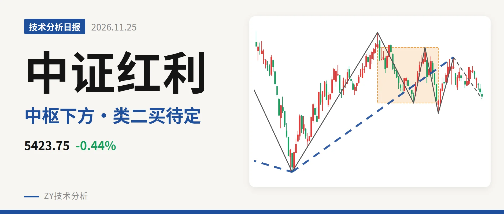
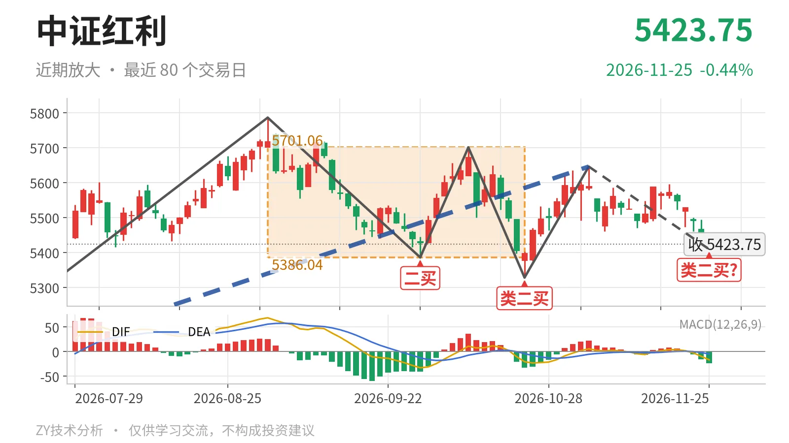

中证红利｜暂定类二买，回试5386点

最近日线中枢 5386.04—5701.06点，收盘位于中枢之内
一句话：冲高乏力后回落至最近中枢内，暂定类二买仍在延续。
📉 走势结构：日线上涨段还在延续，但困在更大震荡里
当前处于2026年6月30日至11月4日的日线上涨线段中，该线段从4995.49点升至5646.01点，还在延续。更大级别看，2022年11月1日以来的上涨段、2024年10月8日至2026年6月30日的下跌段、2026年6月30日以来的反弹段三段上下沿互相重叠，其中后两段都没有结束信号，只能定性为宽幅中枢震荡。11月4日以来的日线下跌笔已回到最近中枢内，说明这段反弹尚未走出单边结构。

📊 中枢与位置：现价回到最近中枢中轴下方
最新收盘5423.75点位于9月1日至10月23日日线笔中枢5386.04—5701.06点之内，高于下沿约38点，低于中轴5543.55点约120点，处中枢下半区。与2025年8月4日至2026年4月30日的中枢相比，最近中枢下沿由5518.46点降至5386.04点、上沿由5639.99点升至5701.06点，中轴从5579.23点降至5543.55点，更接近中枢扩展。价格未能稳在中轴上方，说明短期重心仍在下半区。
🧭 买卖点：上方一卖压顶，下方暂定类二买未结束
6月30日一买4995.49点之后，9月29日二买5386.04点和10月23日类二买5328.30点出现反复，类二买一度低于二买。11月25日的类二买5409.40点落在11月4日至11月25日下跌笔内，这一笔还没结束，因此只是暂定类二买，若后续低点下移，该买点位置会同步变化。上方2025年7月23日一卖5702.03点与最近中枢上沿5701.06点几乎重合，11月4日高点5646.01点未触到该压力区，反弹始终差一段。

⚡ 背驰：反弹不创新高，红柱与DIF同步收缩
最关键的对比在6月30日至9月1日上涨笔与10月23日至11月4日上涨笔之间。前者红柱面积1451、DIF高点68.7，后者红柱面积65、DIF高点5.7，价格高点由5786.14点回落到5646.01点，属于不创新高且力度大幅衰减。当前DIF仍在零轴下方，11月4日以来的下跌笔绿柱面积56、DIF低点暂为-16.6，回吐没有结束。这说明11月4日后的回落有力度衰竭在先。
🔎 关键位置：5701点是上沿，5386点是下沿
反抽若不能重新站上5701点一线，反弹就仍被限制在最近中枢内，无法构成向上离开。回落若跌破5386点附近，9月29日二买被破坏，结构上会向5328点附近寻找10月23日类二买支撑；再失守5328点，6月30日以来的日线上涨线段就有被破坏风险。重新站上5702点，近段回落才更像中枢扩展的一部分。整体结构偏弱，弱在反弹高点一个比一个低、DIF仍处零轴下、价格在中枢中轴下方运行，但尚未出现破坏性下跌。
⚠️ 本文为基于公开行情数据的缠论技术结构记录，由程序自动计算并生成，仅供学习交流，不构成任何投资建议。市场有风险，投资需谨慎。